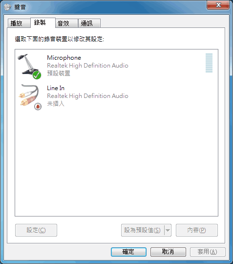
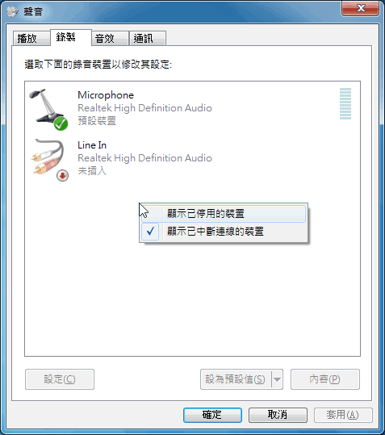
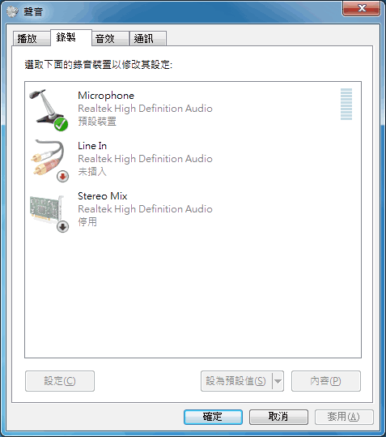
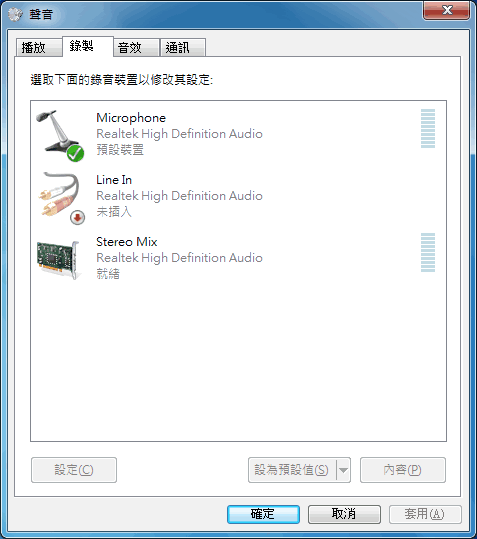

開啟音效卡錄音功能
有些音效卡預設將「混音」關閉，只要手動開啟，就能用錄音軟體直接錄下音效卡發出的聲音。
Windows 7
其中又以 Windows 7 最不像話，它把未開啟的選項隱藏起來，結果幾乎每個人看了都以為自己音效卡不支援錄音功能。
為了更清楚說明，本文示範在 Windows 7 開啟 Realtek High Definition Audio 的 Stereo Mix 裝置。
步驟１
滑鼠點擊「開始」→「控制台」→「硬體和音效」→「聲音」，然後在跳出的視窗，將頁籤切換到「錄製」，如圖：

步驟２
在聲音視窗畫面的空白處按滑鼠右鍵來跳出選單，然後勾選「顯示已停用的裝置」。

步驟３
這樣就會看到未開啟的裝置以半透明的圖示呈現出來：

步驟４
開啟這個裝置吧！這樣就能錄製音效卡發出的聲音了！
